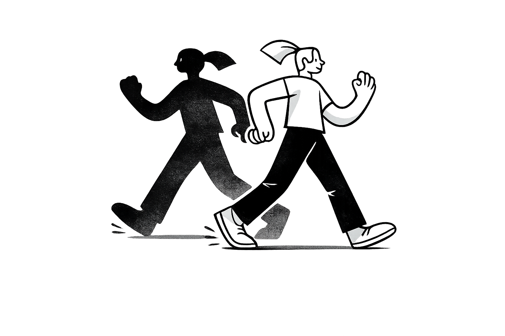
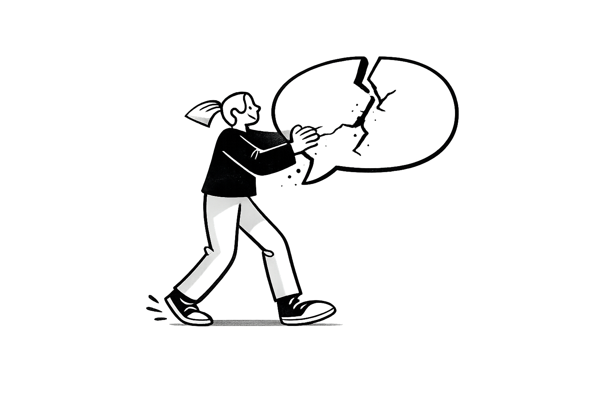
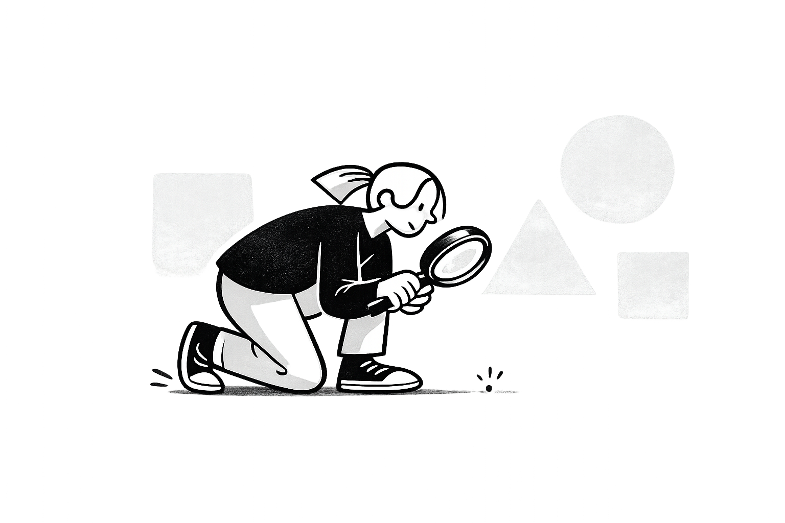
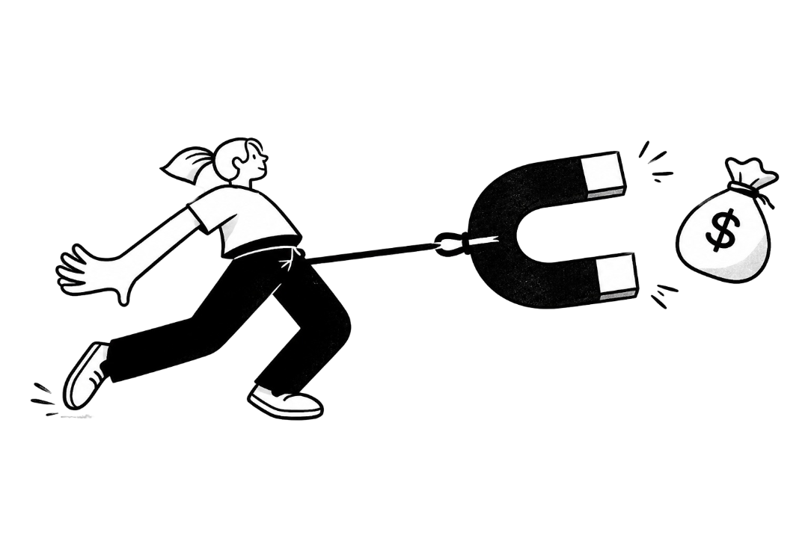
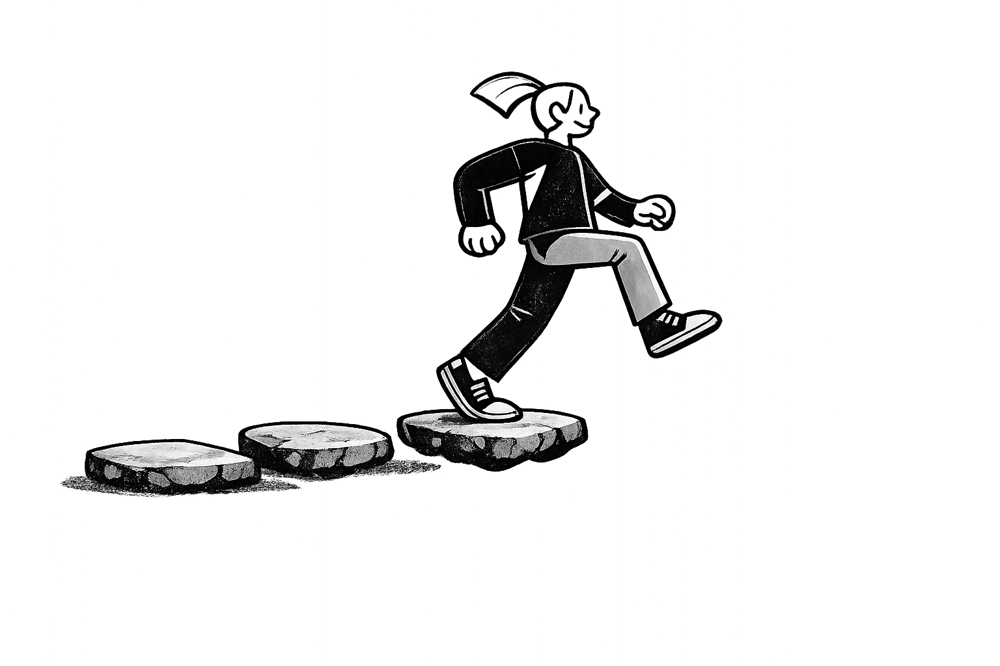
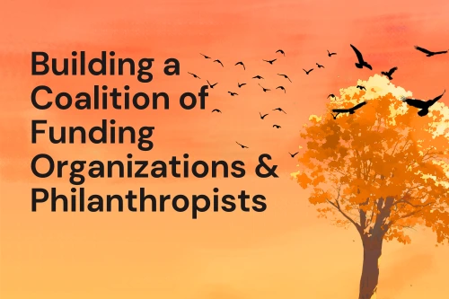

For three decades, Julian Vance ran the only peer-reviewed process for identifying who was actually building the future. 1,500 innovators, elected by each other, across 20 years.
Read the full origin.png)
Strategies fail when everyone builds on the same unchallenged belief.
We find it before the money moves.
This is an illustrative reconstruction based on public record. Cornerstone Labs does not claim any prior engagement with Motorola or Iridium.
Every strategy runs into the same five walls.
The baseline every durable strategy has to satisfy. People respond to incentives, social pressure, and switching costs in ways that are remarkably stable across contexts. When people don't behave the way the strategy needed them to, everything built on that expectation collapses with it.

The story usually holds right up until it doesn't. The difference between what the story promises and what the incentive structure actually rewards is where trust collapses, and where the internal room stops being honest with itself.

Shifts that matter rarely announce themselves. They appear first as weak data points most teams aren't watching for. By the time they're visible to everyone, the window to respond has closed.

The stated goal and the actual reward structure point in different directions more often than anyone admits. When they diverge, the reward structure wins. Quietly. From inside the organisation that built both.

Plans fail in this layer more than any other, and rarely in ways that show up in the strategy document. Nobody measures what a system can actually do against what the plan assumed until after the commitment is made.

Retrodictive Validation™: name the assumption, test it against precedent.
Before anything else, we find the one claim your decision depends on and write it in a single sentence.
"What exactly has to be true?"We examine every relevant case across sectors, periods, and markets where this claim has been tested under real conditions. We examine the full set, verify relevance, and document the base rate: how often this claim held, and where.
"Where else has this exact bet been made?"Claims that hold everywhere are rare. Most hold under specific conditions and collapse when those conditions shift. We name them. Most internal reviews skip this step because it means admitting the conditions might already be gone.
"What had to be true for this to work?"For every case where the claim broke, we trace the condition that flipped the outcome. This is where the conclusion earns its weight. A pattern across failures is a finding. One data point is a story. We only return conclusions the evidence earns.
"Where, specifically, did this stop holding?"A written assessment: the claim stated plainly, the cases it's built on, the confidence level and what drives it, and the one condition that changes the conclusion. Where stakeholders are part of the picture, you also get a working map of who moves and what shifts them, not a slide that lives in a folder no one opens. You keep it. We have no further stake in what you decide.
"What would have to be false for us to be wrong?"Part of the work is who's in the room. These are the practitioners and researchers brought in to challenge the claims before resources moved.
An organisation can earn convening authority by building the infrastructure others benefit from, even before it has the standing to claim that role.
The organisation emerged from the process with relationships that would have taken years to build on their own. The network kept compounding after the engagement ended.

The right coalition, convened before the conversation goes mainstream, can shape how a field thinks about AI-driven displacement. Not just respond to it.
For three decades, Julian Vance ran the only peer-reviewed process for identifying who was actually building the future. 1,500 innovators, elected by each other, across 20 years.
Read the full originFounds Common Ground, the first national nonprofit jobs clearinghouse in the US, based at a leading school of public policy. The earliest test of a pattern that would define everything that followed: map who needs to connect, build the infrastructure that lets them, get out of the way.
Serves on a presidential transition team, advising on technology entrepreneurship and economic development.
Founds the Global Innovators Network, 1,500+ peer-elected innovators across two decades, running an annual awards program with major media, science, and technology partners. A record of who was building the future before the press or the money arrived.
Co-leads an international congress on the governance of AI.
Founds the Horizon Institute and Cornerstone Labs, the research arm and the technology arm of the same methodology. One tests ideas at societal scale. The other applies the same discipline to decisions before they're made.
Develops the Directed Impact Process, the methodology behind Cornerstone Labs' coalition-building engagements.
Experts in quantitative strategy, AI governance, macroeconomics, and media theory.
.png)
.png)
.png)
.png)
.png)
.png)
.png)
.png)
Before you commit. Before you announce, hire, launch, or sign. Send us the claim the decision rests on.
We'll confirm fit first. If there's enough to work with, we'll reply within one business day.